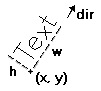
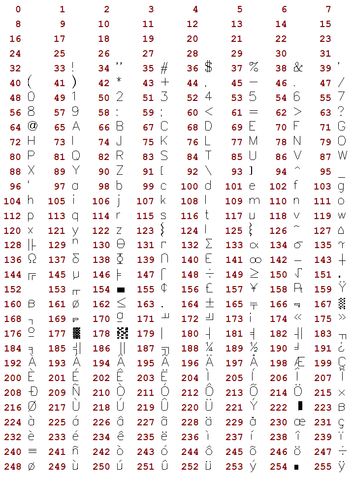
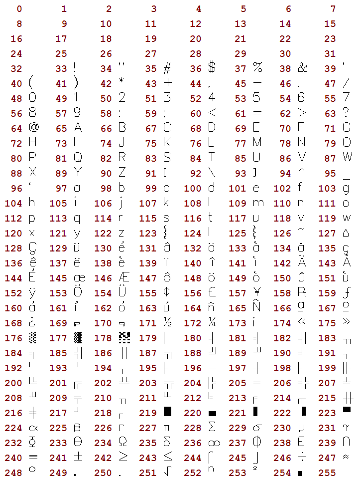

It is a text that uses a font created only with line segments. It is very useful to be scaled and very fast. You must set the text size before drawing any text. The functions ignore the new line character "\n"; only the wdMultiLineVectorText function will consider this character. The default direction is horizontal from left to right.
Vector Text Parameters

All vector text drawing in all drivers are simulated using other CD primitives.
void cdCanvasVectorText(cdCanvas* canvas, int x, int y, const char* text); [in C]
void wdCanvasVectorText(cdCanvas* canvas, double x, double y, const char* text); (WC) [in C]
canvas:VectorText(x, y: number, text: string) [in Lua]
canvas:wVectorText(x, y: number, text: string) (WC) [in Lua]
Draws a vector text in position (x,y), respecting the alignment defined by cdTextAlignment. It ignores the configuration cdBackOpacity, being always transparent. It also ignores strings with multiple lines. It is ESSENTIAL to call cdVectorTextSize or cdVectorCharSize before using cdVectorText or cdMultiLineVetorText.
void cdCanvasMultiLineVectorText(cdCanvas* canvas, int x, int y, const char* text); [in C]
void wdCanvasMultiLineVectorText(cdCanvas* canvas, double x, double y, const char* text); (WC) [in C]
canvas:MultiLineVectorText(x, y: number, text: string) [in Lua]
canvas:wMultiLineVectorText(x, y: number, text: string) (WC) [in Lua]
Draws a vector text with several lines in position (x,y), respecting the alignment defined by cdTextAlignment. It ignores the configuration cdBackOpacity, being always transparent. Lines are broken by characters "\n". Each line respects the scale defined in cdVectorTextSize or cdVectorCharSize. This function's purpose is to make function cdVectorText more efficient, not being concerned with multiple lines.
void cdCanvasVectorTextDirection(cdCanvas* canvas, int x1, int y1, int x2, int y2); [in C]
void wdCanvasVectorTextDirection(cdCanvas* canvas, double x1, double y1, double x2, double y2); (WC) [in C]
canvas:VectorTextDirection(x1, y1, x2, y2: number) [in Lua]
canvas:wVectorTextDirection(x1, y1, x2, y2: number) (WC) [in Lua]
Defines the text direction by means of two points, (x1,y1) and (x2,y2). The default direction is horizontal from left to right.
double* cdCanvasVectorTextTransform(cdCanvas* canvas, const double* matrix); [in C]
canvas:VectorTextTransform(matrix: table) -> (old_matrix: table) [in Lua]
Defines a transformation matrix with 6 elements. If the matrix is NULL, no transformation is set. The default direction is no transformation. The origin is the left bottom corner of matrix. It returns the previous matrix, and the returned vector is only valid until the following call to the function.
The matrix contains scale, rotation and translation elements. It is applied after computing the position and orientation normal to the vector text. We can describe the elements as follows:
|x'| | scl_x*cos(ang) -sin(ang) trans_x | |x| | 3 4 5|
|y'| = | sin(ang) scl_y*cos(ang) trans_y | * |y| with indices | 0 1 2|
|1|
void cdCanvasVectorTextSize(cdCanvas* canvas, int w, int h, const char * text); [in C]
void wdCanvasVectorTextSize(cdCanvas* canvas, double size_x, double size_y, const char* text); (WC) [in C]
canvas:VectorTextSize(w, h: number, text: string) [in Lua]
canvas:wVectorTextSize(w, h: number, text: string) (WC) [in Lua]
Modifies the scale of the vector text so that it corresponds to the string of the bounding box defined by w and h. It ignores strings with multiple lines.
double cdCanvasVectorCharSize(cdCanvas* canvas, int size); [in C]
double wdCanvasVectorCharSize(double size); (WC) [in C]
canvas:VectorCharSize(size: number) -> (old_size: number) [in Lua]
canvas:wVectorCharSize(size: number) -> (old_size: number) (WC) [in Lua]
Sets the height of the characters and adjusts the width according to it. Returns the previous value. CD_QUERY returns the current value.
char* cdCanvasVectorFont(cdCanvas* canvas, const char *filename); [in C]
canvas:VectorFont(filename: string) -> (fontname: string) [in Lua]
Replaces the current vector font with a font stored in a file with a given name. Returns the name of the font loaded or NULL, if it fails. If filename is NULL, it activates the default font "Simplex II" (There is no file associated to this font, it is an embedded font). The library will attempt to load a font from the current directory, if it fails then it will try the directory defined by the environment variable "CDDIR", if it fails, it will attempt to load it using the filename as a string containing the font as if the file was loaded into that string, if it fails again the font is reset to the default font and returns NULL. The file format is compatible with the GKS file format (text mode).
void cdCanvasGetVectorTextSize(cdCanvas* canvas, const char* text, int *w, int *h); [in C]
void wdCanvasGetVectorTextSize(cdCanvas* canvas, const char* text, double *x, double *y); (WC) [in C]
canvas:GetVectorTextSize(text: string) -> (w, h: number) [in Lua]
canvas:wGetVectorTextSize(text: string) -> (w, h: number) (WC) [in Lua]
Queries the string's bounding box. Ignores strings with multiple lines. It is not necessary to provide all return pointers, you can provide only the desired values and NULL for the others.
void cdCanvasGetVectorTextBounds(cdCanvas* canvas, char* text, int px, int py, int *rect); [in C]
void wdCanvasGetVectorTextBounds(cdCanvas* canvas, char* text, double x, double y, double *rect); (WC) [in C]
canvas:GetVectorTextBounds(text: string, px,py: number) -> (rect: table) [in Lua]
canvas:wGetVectorTextBounds(text: string, px,py: number) -> (rect: table) (WC) [in Lua]
Returns the bounding rectangle of the text specified in the current vector font, alignment and direction. Eight values are returned, corresponding to pairs (x,y) of the rectangle's vertices ordered conter-clockwise, starting by the bottom left corner.
The old GKS format contains ASCII codes so a convertion from ANSI to ASCII is done when possible, unmapped characters are left unchanged, but some rearrage was necessary to acomodate the convertion.
The default vector font was changed from the original Simplex II to contain all ANSI accented characters. So some ASCII characters were replaced.
Bellow is the character code table of the default font.

Default Font
The original Simplex II font is available in the file "cd/etc/vectorfont00.txt". Bellow is the character code table of the original font (the table displays the characters after the convertion from ANSI to ASCII):

Original Simplex II